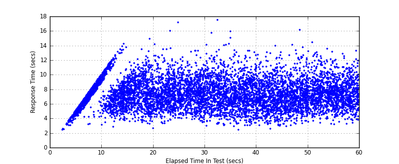

Performance Results Report
Summary
transactions: 8599
errors: 0
run time: 60 secs
rampup: 0 secs
test start: 2017-05-24 17:49:33
test finish: 2017-05-24 17:50:31
time-series interval: 5 secs
workload configuration:
| group name | threads | script name |
|---|
| user_group-21 | 40 | redis_stress.py |
| user_group-20 | 40 | redis_stress.py |
| user_group-23 | 40 | redis_stress.py |
| user_group-22 | 40 | redis_stress.py |
| user_group-25 | 40 | redis_stress.py |
| user_group-24 | 40 | redis_stress.py |
| user_group-2 | 40 | redis_stress.py |
| user_group-3 | 40 | redis_stress.py |
| user_group-1 | 40 | redis_stress.py |
| user_group-6 | 40 | redis_stress.py |
| user_group-7 | 40 | redis_stress.py |
| user_group-4 | 40 | redis_stress.py |
| user_group-5 | 40 | redis_stress.py |
| user_group-8 | 40 | redis_stress.py |
| user_group-9 | 40 | redis_stress.py |
| user_group-10 | 40 | redis_stress.py |
| user_group-11 | 40 | redis_stress.py |
| user_group-12 | 40 | redis_stress.py |
| user_group-13 | 40 | redis_stress.py |
| user_group-14 | 40 | redis_stress.py |
| user_group-15 | 40 | redis_stress.py |
| user_group-16 | 40 | redis_stress.py |
| user_group-17 | 40 | redis_stress.py |
| user_group-18 | 40 | redis_stress.py |
| user_group-19 | 40 | redis_stress.py |
All Transactions
Transaction Response Summary (secs)
| count | min | avg | 80pct | 90pct | 95pct | max | stdev |
|---|
| 8599 | 2.391 | 7.304 | 8.887 | 9.875 | 10.784 | 17.497 | 1.953 |
Interval Details (secs)
| interval | count | rate | min | avg | 80pct | 90pct | 95pct | max | stdev |
|---|
| 1 | 460 | 92.00 | 2.391 | 5.612 | 6.505 | 6.866 | 7.080 | 7.401 | 1.004 |
| 2 | 676 | 135.20 | 2.829 | 8.061 | 9.360 | 10.317 | 10.982 | 12.226 | 1.685 |
| 3 | 679 | 135.80 | 3.566 | 7.367 | 8.758 | 9.603 | 10.522 | 14.217 | 1.823 |
| 4 | 661 | 132.20 | 2.612 | 7.393 | 9.222 | 10.293 | 11.221 | 14.883 | 2.089 |
| 5 | 650 | 130.00 | 3.672 | 7.589 | 9.148 | 9.970 | 10.742 | 17.167 | 1.864 |
| 6 | 675 | 135.00 | 2.997 | 7.482 | 9.123 | 10.032 | 10.748 | 15.740 | 1.971 |
| 7 | 688 | 137.60 | 2.414 | 7.331 | 8.995 | 9.973 | 11.055 | 17.497 | 2.126 |
| 8 | 742 | 148.40 | 3.016 | 7.159 | 8.850 | 9.711 | 10.761 | 13.261 | 2.016 |
| 9 | 702 | 140.40 | 2.531 | 6.978 | 8.633 | 9.599 | 10.309 | 14.103 | 1.935 |
| 10 | 643 | 128.60 | 3.235 | 7.365 | 8.831 | 9.974 | 11.169 | 16.102 | 1.997 |
| 11 | 685 | 137.00 | 3.194 | 7.449 | 8.881 | 9.942 | 10.938 | 13.519 | 1.822 |
| 12 | 338 | 67.60 | 3.221 | 7.411 | 9.000 | 9.849 | 10.615 | 13.245 | 1.823 |
Graphs
Response Time: 5 sec time-series
Response Time: raw data (all points)

Throughput: 5 sec time-series